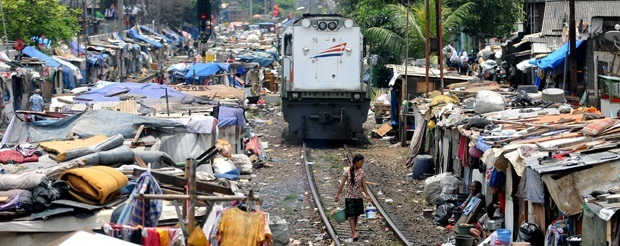
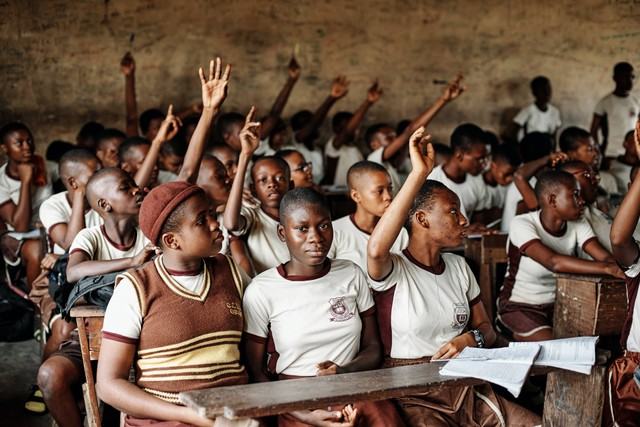
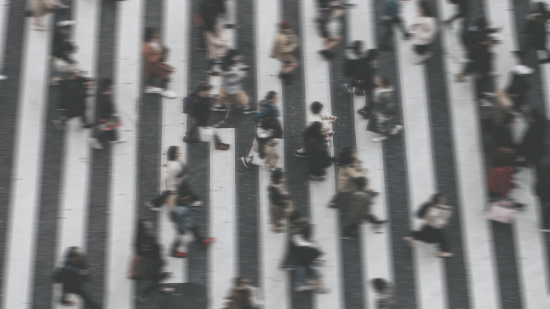

  
Manusia merupakan makhluk sosial. Manusia tidak bisa hidup sendiri dan pastinya membutuhkan orang lain untuk membantu mencukupi kebutuhan hidupnya. Manusia juga membutuhkan hubungan sosial berupa timbal balik sesama makhluk sosial🧑🤝🧑
Begitu juga setiap negara di bumi ini. Setiap negara pun tidak bisa berdiri sendiri. Negara akan mengalami krisis ekonomi, sosial, budaya dan pastinya membutuhkan pertolongan negara lain. Dengan itulah, kerja sama antar negara sangat berguna untuk masing-masing negara yang ingin mengatasi permasalahan yang ada di negaranya. Adapun penyelesaian masalah-masalah tersebut dengan adanya beberapa tujuan untuk membangun dunia yang baik, yakni, Sustainable Development Goals (SDGs)🌏
Maka itu, saya membuat web ini atas dasar menyelesaikan tugas TIK, IPS, dan PPKN, serta memahami pentingnya kerja sama internasional dan hubungan yang berkaitan dengan peran SDGs dalam mewujudkan kesejahteraan di dunia ini🤝Saya berharap, web ini dapat menjadi sarana berguna untuk kita semua dalam mencapai hidup yang baik dan terus berkelanjutan. Sekian dari saya, terima kasih🙏 Selamat membaca📖